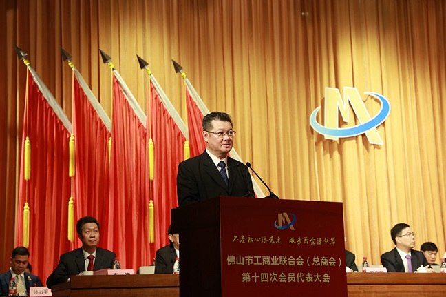
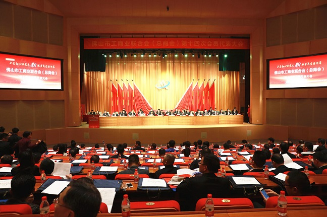

广东省广州市天河区88号
400-123-4567
+86-123-4567
admin@baidu.com
570000
陈昆出席佛山市工商联第十四次会员代表大会
来源：点击：时间：2017-05-23 15:17
1月5日，佛山市工商联（总商会）第十四次会员代表大会召开，佛山工商界近400名代表参加了会议。大会代表听取并审议通过了佛山市工商联第十三届执委会工作报告，选举产生新一届执行委员会。佛山市委书记鲁毅、省工商联副主席陈昆等出席会议并讲话。

陈昆在讲话中指出，五年来佛山市工商联在市委、市政府正确领导下，在市委统战部指导下，团结和带领佛山市广大非公有制人士，紧紧围绕经济建设这个中心，服务大局、服务会员，做了大量卓有成效的工作，特别是在组建镇街总商会构建枢纽型组织体系，承接政府职能转移；推动商会打造五大联盟，促进民营企业转型升级；开展专题大调研当好政府管理民企的助手，开展商事调解，参与“一带一路”建设等方面，取得了明显的工作成效，为佛山市经济发展和社会进步作出了积极的贡献。面对新常态，希望第十四届执委会领导班子充分发挥工商联统战性、经济性和民间性的优势，增强“四个意识”，树立“五大发展理念”，为佛山率先基本实现社会主义现代化、为广东实现“三个定位、两个率先”作出新贡献。

鲁毅充分肯定过去五年佛山市工商联事业全面推进、蓬勃发展的成绩。他指出，习近平总书记参加全国政协十二届四次会议时，在民建、工商联界委员联组会上发表的重要讲话，为今后一个时期做好工商联工作指明了方向。希望新一届市工商联执委班子不断凝聚思想共识，发挥独特优势，切实履行职能，加强自身建设，为佛山新一轮改革发展汇聚智慧力量，放心、放胆、放手支持发展民营经济，当好推动民营企业发展的有力帮手。尤其是充分发挥全市商协会的服务功能，加大对民营企业家的培训力度，把工商联建成民营企业之家，努力开创工商联工作的新局面。
市领导黄喜忠、卢立湃、马亮照、唐冬生等出席会议。
-
下一篇：暂无